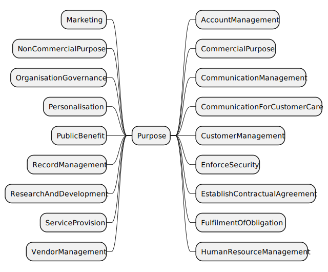

This document provides additional details and examples for purpose concepts in the Data Privacy Vocabulary [[DPV]], and is a companion to the [[DPV]] specification.
Contributing: The DPVCG welcomes participation to improve the DPV and associated resources, including expansion or refinement of concepts, requesting information and applications, and addressing open issues. See contributing guide for further information.
DPV and Related Resources
[[[DPV]]]: is the base/core specification for the 'Data Privacy Vocabulary', which is extended for Personal Data [[PD]], Locations [[LOC]], Risk Management [[RISK]], Technology [[TECH]], and [[AI]]. Specific [[LEGAL]] extensions are also provided which model jurisdiction specific regulations and concepts - see the complete list of extensions. To support understanding and applications of [[DPV]], various guides and resources [[GUIDES]] are provided, including a [[PRIMER]]. A Search Index of all concepts from DPV and extensions is available.
[[DPV]] and related resources are published on GitHub. For a general overview of the Data Protection Vocabularies and Controls Community Group [[DPVCG]], its history, deliverables, and activities - refer to DPVCG Website. For meetings, see the DPVCG calendar.
The peer-reviewed article “Creating A Vocabulary for Data Privacy” presents a historical overview of the DPVCG, and describes the methodology and structure of the DPV along with describing its creation. An open-access version can be accessed here, here, and here. The article preprint Data Privacy Vocabulary (DPV) - Version 2 describes the changes made in DPV v2.
Introduction

Overview of Purpose taxonomy in DPV (click to open in new window)
DPV provides a taxonomy of Purpose instances for use with [=hasPurpose=] relation. In addition, DPV also defines the concept [=Sector=] (associated using [=hasSector=]) to indicate a contextual interpretation of the purpose within a specified sector.
DPV’s taxonomy of purposes is used to represent the reason or justification for processing of personal data. For this, purposes are organised within DPV based on how they relate to the processing of personal data in terms of several factors, such as: management functions related to information (e.g. records, account, finance), fulfilment of objectives (e.g. delivery of goods), providing goods and services (e.g. service provision), intended benefits (e.g. optimisations for service provider or consumer), and legal compliance.
It is important to note the following for real-world implications of Purpose:
There is no universal definition for what constitutes a ’purpose’ or what attributes are associated with it.
There are several distinct ways to model purposes, e.g. as a ‘goal’ such as ‘Delivery of Ordered Goods’; or as a statement explaining the processing of personal data, e.g. ‘Sending newsletters to Email’.
DPV does not define requirements for what is a ‘valid purpose’ as these are defined externally, e.g. in laws such as [[GDPR]] Article.5-1b where purposes are required to be ‘explicit and legitimate’.
Purposes have contextual interpretations within their application and domains (i.e. depending on how they are used in an use-case). For example, ServiceProvision is interpreted differently across the use-cases of an online website, a goods delivery outlet, and a medical centre - even if they use the same terms or phrasing.
Following from the above, practical uses of DPV will likely need to extend one of the concepts within DPV’s purpose taxonomy to ensure its purpose descriptions are specific and understandable within the context of that use-case. We therefore suggest, where possible and appropriate, to create a customised purpose as required within the use-cases by extending one or several purposes from the DPV taxonomy and to provide a human readable description to assist in its accurate interpretation (e.g. DPV prefers use of skos:prefLabel for its concepts and dct:title for other documentation).
dpv:Purpose: Purpose or (broader) Goal associated with data or technology
go to full definition
dpv:AccountManagement: Account Management refers to purposes associated with account management, such as to create, provide, maintain, and manage accounts
go to full definition
dpv:CommercialPurpose: Purposes associated with processing activities performed in a commercial setting or with intention to commercialise
go to full definition
dpv:CommercialResearch: Purposes associated with conducting research in a commercial setting or with intention to commercialise e.g. in a company or sponsored by a company
go to full definition
dpv:CommunicationManagement: Communication Management refers to purposes associated with providing or managing communication activities e.g. to send an email for notifying some information
go to full definition
dpv:CommunicationForCustomerCare: Customer Care Communication refers to purposes associated with communicating with customers for assisting them, resolving issues, ensuring satisfaction, etc. in relation to services provided
go to full definition
dpv:CustomerManagement: Customer Management refers to purposes associated with managing activities related with past, current, and future customers
go to full definition
dpv:CustomerCare: Customer Care refers to purposes associated with purposes for providing assistance, resolving issues, ensuring satisfaction, etc. in relation to services provided
go to full definition
dpv:CommunicationForCustomerCare: Customer Care Communication refers to purposes associated with communicating with customers for assisting them, resolving issues, ensuring satisfaction, etc. in relation to services provided
go to full definition
dpv:CustomerClaimsManagement: Customer Claims Management refers to purposes associated with managing claims, including repayment of monies owed
go to full definition
dpv:CustomerOrderManagement: Customer Order Management refers to purposes associated with managing customer orders i.e. processing of an order related to customer's purchase of good or services
go to full definition
dpv:CustomerRelationshipManagement: Customer Relationship Management refers to purposes associated with managing and analysing interactions with past, current, and potential customers
go to full definition
dpv:ImproveInternalCRMProcesses: Purposes associated with improving customer-relationship management (CRM) processes
go to full definition
dpv:CustomerSolvencyMonitoring: Customer Solvency Monitoring refers to purposes associated with monitor solvency of customers for financial diligence
go to full definition
dpv:CreditChecking: Purposes associated with monitoring, performing, or assessing credit worthiness or solvency
go to full definition
dpv:MaintainCreditCheckingDatabase: Purposes associated with maintaining a Credit Checking Database
go to full definition
dpv:MaintainCreditRatingDatabase: Purposes associated with maintaining a Credit Rating Database
go to full definition
dpv:EnforceSecurity: Purposes associated with ensuring and enforcing security for data, personnel, or other related matters
go to full definition
dpv:EnforceAccessControl: Purposes associated with conducting or enforcing access control as a form of security
go to full definition
dpv:IdentityAuthentication: Purposes associated with performing authentication based on identity as a form of security
go to full definition
dpv:MisusePreventionAndDetection: Prevention and Detection of Misuse or Abuse of services
go to full definition
dpv:FraudPreventionAndDetection: Purposes associated with fraud detection, prevention, and mitigation
go to full definition
dpv:CounterMoneyLaundering: Purposes associated with detection, prevention, and mitigation of mitigate money laundering
go to full definition
dpv:MaintainFraudDatabase: Purposes associated with maintaining a database related to identifying and identified fraud risks and fraud incidents
go to full definition
dpv:Verification: Purposes association with verification e.g. information, identity, integrity
go to full definition
dpv:AgeVerification: Purposes associated with verifying or authenticating age or age related information as a form of security
go to full definition
dpv:IdentityVerification: Purposes associated with verifying or authenticating identity as a form of security
go to full definition
dpv:EstablishContractualAgreement: Purposes associated with carrying out data processing to establish an agreement, such as for entering into a contract
go to full definition
dpv:FulfilmentOfObligation: Purposes associated with carrying out data processing to fulfill an obligation
go to full definition
dpv:FulfilmentOfContractualObligation: Purposes associated with carrying out data processing to fulfill a contractual obligation
go to full definition
dpv:LegalCompliance: Purposes associated with carrying out data processing to fulfill a legal or statutory obligation
go to full definition
dpv:ProtectionOfIPR: Purposes associated with the protection of intellectual property rights
go to full definition
dpv:HumanResourceManagement: Purposes associated with managing humans and 'human resources' within the organisation for effective and efficient operations.
go to full definition
dpv:PersonnelManagement: Purposes associated with management of personnel associated with the organisation e.g. evaluation and management of employees and intermediaries
go to full definition
dpv:PersonnelHiring: Purposes associated with management and execution of hiring processes of personnel
go to full definition
dpv:PersonnelPayment: Purposes associated with management and execution of payment of personnel
go to full definition
dpv:Marketing: Purposes associated with conducting marketing in relation to organisation or products or services e.g. promoting, selling, and distributing
go to full definition
dpv:Advertising: Purposes associated with conducting advertising i.e. process or artefact used to call attention to a product, service, etc. through announcements, notices, or other forms of communication
go to full definition
dpv:PersonalisedAdvertising: Purposes associated with creating and providing personalised advertising
go to full definition
dpv:TargetedAdvertising: Purposes associated with creating and providing personalised advertisement where the personalisation is targeted to a specific individual or group of individuals
go to full definition
dpv:DirectMarketing: Purposes associated with conducting direct marketing i.e. marketing communicated directly to the individual
go to full definition
dpv:PublicRelations: Purposes associated with managing and conducting public relations processes, including creating goodwill for the organisation
go to full definition
dpv:SocialMediaMarketing: Purposes associated with conducting marketing through social media
go to full definition
dpv:NonCommercialPurpose: Purposes associated with processing activities performed in a non-commercial setting or without intention to commercialise
go to full definition
dpv:NonCommercialResearch: Purposes associated with conducting research in a non-commercial setting e.g. for a non-profit-organisation (NGO)
go to full definition
dpv:OrganisationGovernance: Purposes associated with conducting activities and functions for governance of an organisation
go to full definition
dpv:DisputeManagement: Purposes associated with activities that manage disputes by natural persons, private bodies, or public authorities relevant to organisation
go to full definition
dpv:MemberPartnerManagement: Purposes associated with maintaining a registry of shareholders, members, or partners for governance, administration, and management functions
go to full definition
dpv:OrganisationComplianceManagement: Purposes associated with managing compliance for organisation in relation to internal policies
go to full definition
dpv:OrganisationRiskManagement: Purposes associated with managing risk for organisation's activities
go to full definition
dpv:Personalisation: Purposes associated with creating and providing customisation based on attributes and/or needs of person(s) or context(s).
go to full definition
dpv:PersonalisedAdvertising: Purposes associated with creating and providing personalised advertising
go to full definition
dpv:TargetedAdvertising: Purposes associated with creating and providing personalised advertisement where the personalisation is targeted to a specific individual or group of individuals
go to full definition
dpv:ServicePersonalisation: Purposes associated with providing personalisation within services or product or activities
go to full definition
dpv:PersonalisedBenefits: Purposes associated with creating and providing personalised benefits for a service
go to full definition
dpv:ProvidePersonalisedRecommendations: Purposes associated with creating and providing personalised recommendations
go to full definition
dpv:ProvideEventRecommendations: Purposes associated with creating and providing personalised recommendations for events
go to full definition
dpv:ProvideProductRecommendations: Purposes associated with creating and providing product recommendations e.g. suggest similar products
go to full definition
dpv:UserInterfacePersonalisation: Purposes associated with personalisation of interfaces presented to the user
go to full definition
dpv:PublicBenefit: Purposes undertaken and intended to provide benefit to public or society
go to full definition
dpv:CombatClimateChange: Purposes associated with combating the causes and consequences of climate change, including reducing gas emissions and fighting emergencies such as floods or wildfires
go to full definition
dpv:Counterterrorism: Purposes associated with activities that detect, prevent, mitigate, or otherwise perform activities to combat or eliminate terrorism (also referred to as anti-terrorism)
go to full definition
dpv:DataAltruism: Purposes associated with the voluntary sharing of data for the general interest of the public, such as healthcare or combating climate change
go to full definition
dpv:ImproveHealthcare: Purposes associated with improving healthcare systems such as for personalised treatments and curing chronic diseases
go to full definition
dpv:ImprovePublicServices: Purposes associated with improving the provision of public services, such as public safety, education or law enforcement
go to full definition
dpv:ImproveTransportMobility: Purposes associated with improving traffic, public transport systems or costs for drivers
go to full definition
dpv:ProtectionOfNationalSecurity: Purposes associated with the protection of national security
go to full definition
dpv:ProtectionOfPublicSecurity: Purposes associated with the protection of public security
go to full definition
dpv:ProvideOfficialStatistics: Purposes associated with facilitating the development, production and dissemination of reliable official statistics
go to full definition
dpv:PublicPolicyMaking: Purposes associated with public policy making, such as the development of new laws
go to full definition
dpv:RecordManagement: Purposes associated with manage creation, storage, and use of records relevant to operations, events, and processes e.g. to store logs or access requests
go to full definition
dpv:ResearchAndDevelopment: Purposes associated with conducting research and development for new methods, products, or services
go to full definition
dpv:AcademicResearch: Purposes associated with conducting or assisting with research conducted in an academic context e.g. within universities
go to full definition
dpv:CommercialResearch: Purposes associated with conducting research in a commercial setting or with intention to commercialise e.g. in a company or sponsored by a company
go to full definition
dpv:NonCommercialResearch: Purposes associated with conducting research in a non-commercial setting e.g. for a non-profit-organisation (NGO)
go to full definition
dpv:ScientificResearch: Purposes associated with scientific research
go to full definition
dpv:ServiceProvision: Purposes associated with providing service or product or activities
go to full definition
dpv:PaymentManagement: Purposes associated with processing and managing payment in relation to service, including invoicing and records
go to full definition
dpv:RepairImpairments: Purposes associated with identifying, rectifying, or otherwise undertaking activities intended to fix or repair impairments to existing functionalities
go to full definition
dpv:RequestedServiceProvision: Purposes associated with delivering services as requested by user or consumer
go to full definition
dpv:DeliveryOfGoods: Purposes associated with delivering goods and services requested or asked by consumer
go to full definition
dpv:SearchFunctionalities: Purposes associated with providing searching, querying, or other forms of information retrieval related functionalities
go to full definition
dpv:SellProducts: Purposes associated with selling products or services
go to full definition
dpv:SellDataToThirdParties: Purposes associated with selling or sharing data or information to third parties
go to full definition
dpv:SellInsightsFromData: Purposes associated with selling or sharing insights obtained from analysis of data
go to full definition
dpv:SellProductsToDataSubject: Purposes associated with selling products or services to the user, consumer, or data subjects
go to full definition
dpv:ServiceOptimisation: Purposes associated with optimisation of services or activities
go to full definition
dpv:OptimisationForConsumer: Purposes associated with optimisation of activities and services for consumer or user
go to full definition
dpv:OptimiseUserInterface: Purposes associated with optimisation of interfaces presented to the user
go to full definition
dpv:OptimisationForController: Purposes associated with optimisation of activities and services for provider or controller
go to full definition
dpv:ImproveExistingProductsAndServices: Purposes associated with improving existing products and services
go to full definition
dpv:ImproveInternalCRMProcesses: Purposes associated with improving customer-relationship management (CRM) processes
go to full definition
dpv:IncreaseServiceRobustness: Purposes associated with improving robustness and resilience of services
go to full definition
dpv:InternalResourceOptimisation: Purposes associated with optimisation of internal resource availability and usage for organisation
go to full definition
dpv:ServicePersonalisation: Purposes associated with providing personalisation within services or product or activities
go to full definition
dpv:PersonalisedBenefits: Purposes associated with creating and providing personalised benefits for a service
go to full definition
dpv:ProvidePersonalisedRecommendations: Purposes associated with creating and providing personalised recommendations
go to full definition
dpv:ProvideEventRecommendations: Purposes associated with creating and providing personalised recommendations for events
go to full definition
dpv:ProvideProductRecommendations: Purposes associated with creating and providing product recommendations e.g. suggest similar products
go to full definition
dpv:UserInterfacePersonalisation: Purposes associated with personalisation of interfaces presented to the user
go to full definition
dpv:ServiceRegistration: Purposes associated with registering users and collecting information required for providing a service
go to full definition
dpv:ServiceUsageAnalytics: Purposes associated with conducting analysis and reporting related to usage of services or products
go to full definition
dpv:TechnicalServiceProvision: Purposes associated with managing and providing technical processes and functions necessary for delivering services
go to full definition
dpv:VendorManagement: Purposes associated with manage orders, payment, evaluation, and prospecting related to vendors
go to full definition
dpv:VendorPayment: Purposes associated with managing payment of vendors
go to full definition
dpv:VendorRecordsManagement: Purposes associated with managing records and orders related to vendors
go to full definition
dpv:VendorSelectionAssessment: Purposes associated with managing selection, assessment, and evaluation related to vendors
go to full definition
dpv:RightsFulfillment: Purposes associated with the fulfillment of rights specified in law
go to full definition
dpv:Sector: Sector describes the area of application or domain that indicates or restricts scope for interpretation and application of purpose e.g. Agriculture, Banking
go to full definition
Guidelines on Purposes
DPV's purpose taxonomy enables expressing the category of purpose i.e the broader goal or reason. To enable accurate representation of purposes, we recommend further describing the purposes in a contextual manner where relevant. For example, the concept [=Marketing=] refers to the broad purpose of 'marketing', which may not be sufficient to represent information such as the marketing is about a specific campaign associated with the holiday season. Such additional details are necessary to understand where the 'initial' purpose may differ with 'subsequent' purposes of data. For example, if consent was given only for the use of personal data for marketing during holiday seasons, other non-holiday marketing purposes would not be compatible with it. Additional details can be added to DPV purposes by two methods: (1) extending the DPV taxonomy; and (2) adding annotations containing human-readable descriptions. We recommend always using (2), and using (1) where necessary or relevant.
To enable the accurate representations of purposes, we also recommend choosing the most relevant or closest concept from purpose taxonomy so that the purpose is as specific as possible. For example, choosing [=ProvidePersonalisedRecommendations=] instead of [=Personalisation=] allows communicating that the personalisation is of a specific kind and that other kinds of personalisations such as for UI/UX or advertising are not part of this purpose.
Service Provision
For purposes associated with [=ServiceProvision=], DPV provides concepts such as [=PaymentManagement=], [=ServiceOptimisation=], and [=ServiceRegistration=] amongst others. To associate these with services, the `Service` concept can be used similar to how `Process` is used to structure related information together. In this manner, a service can be expressed in terms of the different purposes and processes it contains - which may have their own separate legal basis.
Legal Obligation/Compliance
To express the purpose is associated with a legal obligation or a requirement for compliance such as in a contract, the concept [=FulfilmentOfObligation=] is provided with further concepts [=FulfilmentOfContractualObligation=], [=LegalCompliance=], and [=ProtectionOfIPR=]. When such purposes are required by law i.e. their implementation is necessary to comply with a legal obligation, the legal basis `LegalObligation` should be used along with details of the law and the obligation.
Sector of Purpose Application
DPV provides Sector that can be used to indicate the relevant information to further clarify or indicate how a purpose should be interpreted. Sector, used with the hasSector relation, denotes the sector or domain of application, such as Manufacturing. This can be used alongside existing official sector taxonomies such as [[NACE]] (EU), [[NAICS]] (USA), or [[ISIC]] (UN), as well as commercial industry taxonomies such as [[GICS]] maintained by organisations MSCI and S&P. Multiple classifications can be used through mappings between sector codes such as the [[[NACE-NAICS]]] provided by EU.
The DPVCG welcomes discussions on the alignment of concepts in NACE, NAICS, ISIC, and GICS with DPV's Purpose taxonomy to further expand on how specific purposes can be represented within the context of a particular domain or sector.
DPVCG initially provided an interpretation of the NACE revision 2 codes which uses rdfs:subClassOf to specify the hierarchy between sector concepts instead of the SKOS relations used in NACE. In 2.0, the NACE extension has been removed as there was no added benefits provided in DPV's NACE extension and the recommendation is to use the official/authoritative NACE concepts and IRIs. Further, NACE revision 2.1 has been published which should be reffered to as the latest version.
While the use of Sector for restricting (personal data processing) purposes is an uncommon and undocumented practice in terms of legal enforcement, we provide this feature as the use of sector code can assist with identification and interpretation of information as well as legal or organisational obligations and policies. For example, indicating some purpose is to be implemented within manufacturing or scientific research facilities (e.g. medical centres) can assist in ensuring specific types of access control and policies are defined and implemented.
Purposes associated with conducting advertising i.e. process or artefact used to call attention to a product, service, etc. through announcements, notices, or other forms of communication
Usage Note
Advertising is a subset of Marketing. Advertising by itself does not indicate 'personalisation' i.e. personalised ads.
Date Created
2020-11-04
Contributors
Georg P. Krog, Harshvardhan J. Pandit, Beatriz Esteves
Purposes associated with verifying or authenticating age or age related information as a form of security
Usage Note
Age Verification can include verification of the exact age, e.g. being 21 years old, a date, e.g. birth date is 01 January 1969, or a condition, e.g. age is over 21 years and the person is an adult. Specific dedicated resources should be used to further express information and processes associated with Age Verification, for example the Age Verification Vocabulary https://w3id.org/age/
Date Created
2024-02-14
Contributors
Beatriz Esteves, Arthit Suriyawongkul, Harshvardhan J. Pandit
Purposes associated with combating the causes and consequences of climate change, including reducing gas emissions and fighting emergencies such as floods or wildfires
Customer Care Communication refers to purposes associated with communicating with customers for assisting them, resolving issues, ensuring satisfaction, etc. in relation to services provided
Date Created
2020-11-04
Contributors
Georg P. Krog, Harshvardhan J. Pandit, Beatriz Esteves
Communication Management refers to purposes associated with providing or managing communication activities e.g. to send an email for notifying some information
Usage Note
This purpose by itself does not sufficiently and clearly indicate what the communication is about. As such, it is recommended to combine it with another purpose to indicate the application. For example, Communication of Payment.
Date Created
2021-09-01
Contributors
Georg P. Krog, Paul Ryan, David Hickey, Harshvardhan J. Pandit
Purposes associated with activities that detect, prevent, mitigate, or otherwise perform activities to combat or eliminate terrorism (also referred to as anti-terrorism)
Customer Care refers to purposes associated with purposes for providing assistance, resolving issues, ensuring satisfaction, etc. in relation to services provided
Customer Order Management refers to purposes associated with managing customer orders i.e. processing of an order related to customer's purchase of good or services
Purposes associated with the voluntary sharing of data for the general interest of the public, such as healthcare or combating climate change
Usage Note
Data Altruism as a purpose should be combined with other purposes to indicate their altruistic interpretation or application. E.g. improving healthcare and data altruism in combination.
Purposes associated with managing humans and 'human resources' within the organisation for effective and efficient operations.
Usage Note
HR is a broad concept. Its management includes, amongst others - recruiting employees and intermediaries e.g. brokers, independent representatives; payroll administration, remunerations, commissions, and wages; and application of social legislation.
Purposes associated with carrying out data processing to fulfill a legal or statutory obligation
Usage Note
This purpose only refers to processing that is additionally required in order to fulfill the obligations and requirements associated with a law. For example, the use of consent would have its own separate purposes, with this purpose addressing a legal requirement for maintaining consent record (along with RecordManagement). This purpose will typically be used with Legal Obligation as the legal basis.
Date Created
2020-11-04
Date Modified
2022-11-09
Contributors
Georg P. Krog, Harshvardhan J. Pandit, Beatriz Esteves
Purposes associated with optimisation of activities and services for consumer or user
Usage Note
The term optimisation here refers to the efficiency of the service in terms of technical provision (or similar means) with benefits for everybody. Personalisation implies making changes that benefit the current user or persona.
Purposes associated with managing compliance for organisation in relation to internal policies
Usage Note
Note that this concept relates to internal organisational compliance. The concept LegalCompliance should be used for external legal or regulatory compliance.
Date Created
2021-09-01
Contributors
Paul Ryan, Georg P. Krog, David Hickey, Harshvardhan J. Pandit
Purposes associated with creating and providing customisation based on attributes and/or needs of person(s) or context(s).
Usage Note
This term is a blanket purpose category for indicating personalisation of some other purpose, e.g. by creating a subclass of the other concept and Personalisation
Purpose or (broader) Goal associated with data or technology
Usage Note
The purpose or goal here is intended to sufficiently describe the intention or objective of why the data or technology is being used, and should be broader than mere technical descriptions of achieving a capability. For example, "Analyse Data" is an abstract purpose with no indication of what the analyses is for as compared to a purpose such as "Marketing" or "Service Provision" which provide clarity and comprehension of the 'purpose' and can be enhanced with additional descriptions. Such modelling is in line with regulatory requirements regarding the specificity of purposes, for example in GDPR
Purposes associated with manage creation, storage, and use of records relevant to operations, events, and processes e.g. to store logs or access requests
Usage Note
This purpose relates specifically for record creation and management. This can be combined or used along with other purposes to express intentions such as records for legal compliance or vendor payments.
Date Created
2021-09-01
Contributors
Paul Ryan, Georg P. Krog, David Hickey, Harshvardhan J. Pandit
Purposes associated with identifying, rectifying, or otherwise undertaking activities intended to fix or repair impairments to existing functionalities
Usage Note
An example of identifying and rectifying impairments is the process of finding and fixing errors in products, commonly referred to as debugging
Purposes associated with delivering services as requested by user or consumer
Usage Note
The use of 'request' here includes where an user explicitly asks for the service and also when an established contract requires the provision of the service
Date Created
2021-09-08
Contributors
Georg P. Krog, Harshvardhan J. Pandit, Beatriz Esteves
Purposes associated with the fulfillment of rights specified in law
Usage Note
Where Rights Fulfillment includes activities that are not legal obligations, for example conducting Identity Verification, the documentation should indicate this by expressing them as separate purposes within the same activity
Date Created
2024-02-14
Contributors
Beatriz Esteves, Georg P. Krog, Harshvardhan J. Pandit
Sector describes the area of application or domain that indicates or restricts scope for interpretation and application of purpose e.g. Agriculture, Banking
Usage Note
There are various sector codes used commonly to indicate the domain of an organisation or business. Examples include NACE (EU), ISIC (UN), SIC and NAICS (USA).
Purposes associated with selling or sharing data or information to third parties
Usage Note
Sell here means exchange, submit, or provide in return for direct or indirect compensation. Was subclass of commercial interest, changed to reflect selling something
Date Created
2019-04-05
Contributors
Harshvardhan J. Pandit, Javier Fernández, Axel Polleres, Elmar Kiesling, Fajar Ekaputra, Simon Steyskal
Purposes associated with selling or sharing insights obtained from analysis of data
Usage Note
Sell here means exchange, submit, or provide in return for direct or indirect compensation. Was subclass of commercial interest, changed to reflect selling something
Date Created
2019-04-05
Contributors
Harshvardhan J. Pandit, Javier Fernández, Axel Polleres, Elmar Kiesling, Fajar Ekaputra, Simon Steyskal
Purposes associated with selling products or services to the user, consumer, or data subjects
Usage Note
Sell Products here refers to processing necessary to provide and complete a sale to customers. It should not be confused with providing services with a cost based on an established agreement.
Date Created
2019-04-05
Contributors
Harshvardhan J. Pandit, Javier Fernández, Axel Polleres, Elmar Kiesling, Fajar Ekaputra, Simon Steyskal
Purposes associated with creating and providing personalised advertisement where the personalisation is targeted to a specific individual or group of individuals
DPV uses the following terms from [[RDF]] and [[RDFS]] with their defined meanings:
rdf:type to denote a concept is an instance of another concept
rdfs:Class to denote a concept is a Class or a category
rdfs:subClassOf to specify the concept is a subclass (subtype, sub-category, subset) of another concept
rdf:Property to denote a concept is a property or a relation
The following external concepts are re-used within DPV:
External
Contributors
The following people have contributed to this vocabulary. The names are ordered alphabetically. The affiliations are informative do not represent formal endorsements. Affiliations may be outdated. The list is generated automatically from the contributors listed for defined concepts.
Arthit Suriyawongkul (ADAPT Centre, Trinity College Dublin)
Axel Polleres (Vienna University of Economics and Business)
Beatriz Esteves (IDLab, IMEC, Ghent University)
Bud Bruegger (Unabhängige Landeszentrum für Datenschutz Schleswig-Holstein)
Damien Desfontaines ()
David Hickey (Dublin City University)
Delaram Golpayegani (ADAPT Centre, Trinity College Dublin)
Elmar Kiesling (Vienna University of Technology)
Fajar Ekaputra (Vienna University of Technology)
Georg P. Krog (Signatu AS)
Harshvardhan J. Pandit (ADAPT Centre, Dublin City University)
Javier Fernández (Vienna University of Economics and Business)
Julian Flake (University of Koblenz)
Mark Lizar (OpenConsent/Kantara Initiative)
Maya Borges ()
Paul Ryan (Uniphar PLC)
Piero Bonatti (Università di Napoli Federico II)
Rana Saniei (Universidad Politécnica de Madrid)
Rob Brennan (University College Dublin)
Rudy Jacob (Proximus)
Simon Steyskal (Siemens)
Steve Hickman ()
Funding Acknowledgements
Funding Sponsors
The DPVCG was established as part of the SPECIAL H2020 Project, which received funding from the European Union’s Horizon 2020 research and innovation programme under grant agreement No. 731601 from 2017 to 2019.
Harshvardhan J. Pandit was funded to work on DPV from 2020 to 2022 by the Irish Research Council's Government of Ireland Postdoctoral Fellowship Grant#GOIPD/2020/790.
The ADAPT SFI Centre for Digital Media Technology is funded by Science Foundation Ireland through the SFI Research Centres Programme and is co-funded under the European Regional Development Fund (ERDF) through Grant#13/RC/2106 (2018 to 2020) and Grant#13/RC/2106_P2 (2021 onwards).
Funding Acknowledgements for Contributors
The contributions of Harshvardhan J. Pandit have been made with the financial support of Science Foundation Ireland under Grant Agreement No. 13/RC/2106_P2 at the ADAPT SFI Research Centre.